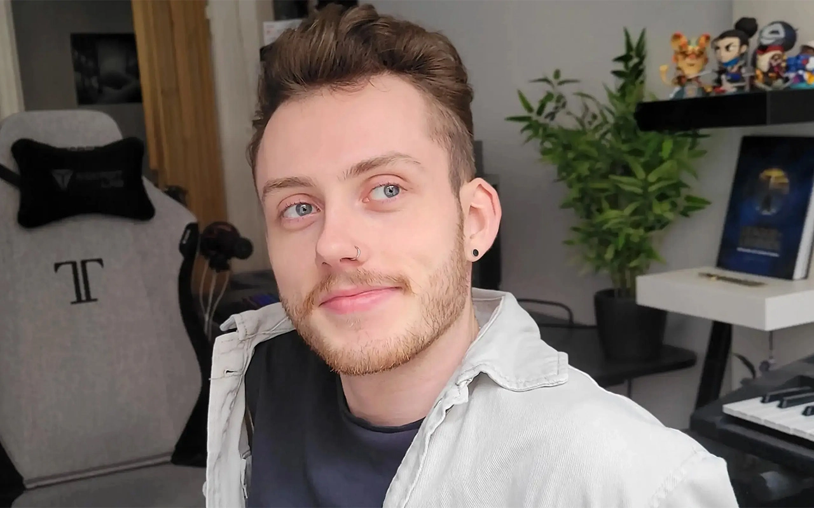
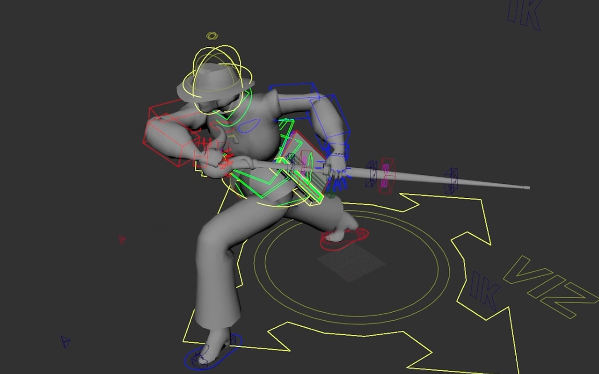
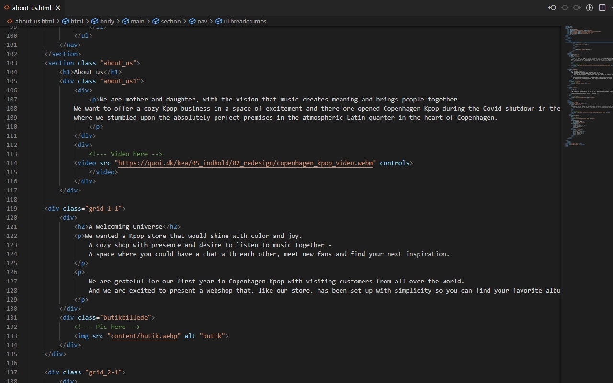
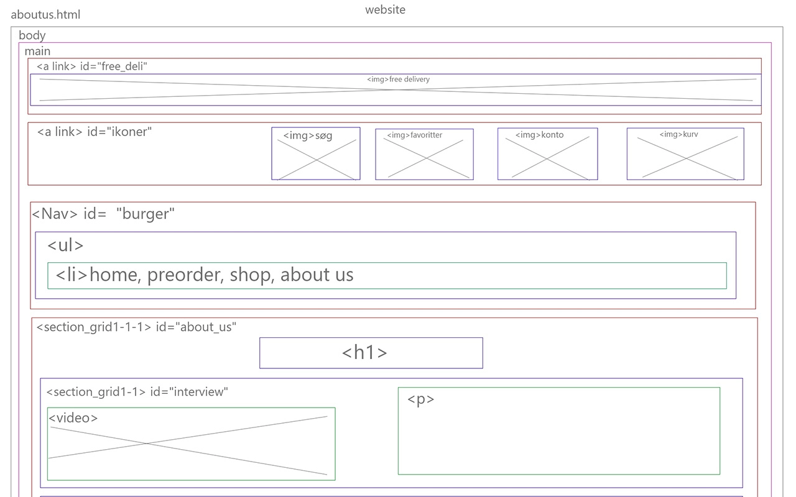

Tema 5
I tema 5 fik jeg en grundlæggende indførsel i videoproduktion, herunder forarbejdet inden selve optagelse, samt postproduktion. Jeg benyttede smartphone kameraer til optagelse af video og ekstern lyd og Premiere Pro og Audition til redigering. Det var væsentligt for at kunne lave mindre video/foto produktioner selv, samt for bedre at kunne kommunikere professionelt med kunder. Jeg blev introduceret til grundlæggende faglige begreber inden for video og fotoproduktion, og benyttede derudover de færdigheder, du har fået i de foregående temaer til at redesigne den valgte virksomheds hjemmeside.
Løsning 05.01.02
I denne opgave skulle jeg lave et lille website, der præsenterer videoen, af en selvvalgt person med en passion. Udover videoen, skulle jeg også tage fotos på location. Hjemmesden skulle give en følelse af en filmplakat.


Opgaveløsning
Løsning 05.02.01
I denne opgave skulle jeg prøve kræfter med et redesign af en selvvalgt virksomheds website. Redesignet skal ende ud i et kodet website og indeholde indholdsproduktion i form af tekst, foto og video. Vi skulle også aflevere et procesdokument, som dokumenterer vores arbejdsproces. I denne opgave lavede vi forskellige ting hver især, jeg stod for videoen og about us siden samt lavede survey.


Opgaveløsning
(password er "kea")